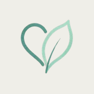

初始角色与森林生成
六维测评生成专属森林。初始只有一块小苗圃和一株匹配性格的植物——敏感细腻对应含羞草，行动力强对应向日葵。结果只呈现为「森林初始状态」。
零诊断话术一款面向 12–18 岁青少年的心理成长 App。没有说教、没有诊断、没有排行榜——把抽象的情绪与心理技能，变成看得见、摸得着的植物生长与森林解锁。每一次小小的行动，都会让森林长出一片新叶。
界面为功能示意，非真机截图
把青春期的自我认同、情绪调节、边界建立等抽象课题，转化为照料专属虚拟森林的具体行动。所有关卡触发条件都遵循真实植物生长逻辑，让成长可视化、有反馈，也经得起推敲。
本应用由「悦泽心理」出品；全部内容随安装包内置，不需要注册，也不上传任何个人数据。
从测评生成到家长协同，六个模块构成完整闭环。所有任务都设计为线下 10 分钟可完成的轻量行动，把技能真正带进真实生活。
六维测评生成专属森林。初始只有一块小苗圃和一株匹配性格的植物——敏感细腻对应含羞草，行动力强对应向日葵。结果只呈现为「森林初始状态」。
零诊断话术12–14 岁与 15–18 岁两套独立内容池，各 35 个微任务，共 70 个。每个主题拆成 15 分钟以内的小关卡；失败不扣分、不掉级，只引导再试一次。
70 个微任务七项心理技能随进度解锁升级，直接映射为植物生长。六维成长雷达图与一键导出成长报告，可用于综合素质评价参考；无全服排行榜。
只与自己比较匿名作品展示墙，只可点赞不可留言；不开放私信与群组，从根源规避网络社交风险。正式运营由持证心理老师团队 100% 人工审核。
无私信无群组通过关卡徘徊次数、长时间无操作等行为无感识别风险。触发后温和提供 12356 全国 7×24 心理援助热线、12355 青少年服务热线与 5 分钟呼吸放松工具，绝不输出诊断结论。
绝不输出诊断进入前需确认「只看整体」。家长只能看到森林总进度与脱敏情绪趋势，看不到任何闯关细节；并收到对应阶段的亲子沟通指南，如尊重孩子的隐私空间。
脱敏趋势五个阶段完全贴合真实的青春期成长路径，心理技能的学习融进森林冒险，没有任何生硬说教。
小森林里只有一株刚破土的幼苗，四周迷雾笼罩。完成「识别我的 3 种基础情绪」后迷雾散去一小片，解锁新苗圃，学会「情绪命名」。
解锁：情绪命名
主题是自我接纳。遇到「小蚜虫」——那些自我否定的念头，通过「写下自己的 3 个优点」等任务，学会与它们和平共处而非彻底消灭。
解锁：自我认同
主题是社交与边界。来串门的小动物对应同学、朋友与家人，通过情景选择题学会礼貌拒绝、表达真实感受。完成后解锁新植物品种，森林面积扩大一倍。
解锁：边界感建立
主题是抗挫力。森林随机触发暴风雨、干旱等自然事件，对应考试失利与人际矛盾。运用已学技能完成「问题拆解五步法」，帮助植物度过灾害。
解锁：挫折应对
小森林长成完整生态系统，植物与小动物和谐共处，象征稳定健康的内心秩序。解锁最终「成长守护者」身份，可为新手森林点亮鼓励的小星光。
解锁：成长守护者
面向未成年人的产品，安全不是附加功能，而是设计前提。
25 分钟温柔提醒，30 分钟锁定休息。不可关闭，无任何诱导沉迷机制。
全部数据 AES-256-GCM 加密落盘，密钥由 Android Keystore 托管，不收集非必要个人信息。
不申请网络、定位、通讯录等任何权限。唯一外拨是用户主动点击后打开系统拨号器。
不提供任何付费功能与消费诱导，任务均为线下 10 分钟可完成的生活化行动。
作品墙仅点赞、无评论私信群组；正式运营由持证心理老师团队 100% 人工审核。
所有挫折场景均配套明确解决方案，绝不制造无力感；全程无抑郁、焦虑等诊断标签。
| 应用名称 | 悦泽心理成长（YozerMentalGrowth） |
|---|---|
| 包名 | com.yozermentalgrowth.com |
| 版本 | V1.0.0（build 1） |
| 系统要求 | Android 7.0（API 24）及以上，目标 API 36 |
| 技术栈 | Flutter 3.47.8 · Dart 3.13 · Kotlin 原生通道 |
| 数据存储 | 本地 AES-256-GCM 加密，密钥由 Android Keystore 托管 |
| 权限申请 | 无（完全离线运行） |
| 援助热线 | 12356 全国心理援助热线（7×24）· 12355 青少年服务热线 |
作品墙与成长守护者星光当前为离线演示形态，正式运营需接入服务端审核后台。升级安装时请使用相同签名版本；如需覆盖安装请先卸载旧版。建议首次使用时在真机上完整走一遍「测评 → 结果页 → 森林 → 首个任务」流程。
唯一正式发布版本，Android 7.0 及以上，安装包约 19 MB。点击前往 GitHub Releases 获取。

面向 12–18 岁青少年的离线心理成长 App
安装包由 Yozer 官方发布于 GitHub Releases；下载前请确认发布者与文件名一致。